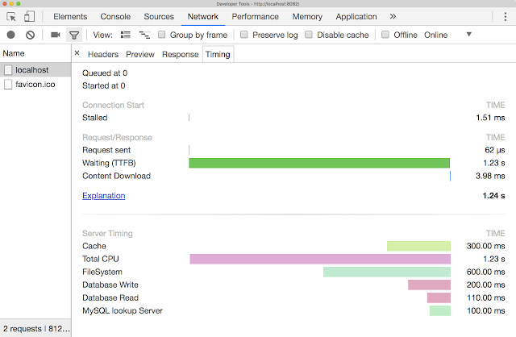
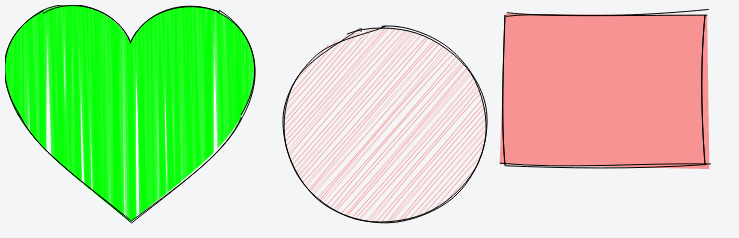
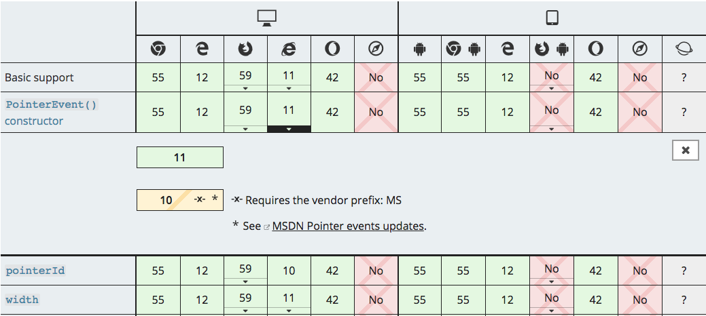

Bleeding Edge Web: March 2018
News From the Bleeding Edge
— Brian Moeskau (@bmoeskau)
— Ryan Vice
Thanks to our premiere sponsor:
News from the
Bleeding Edge
Browser Pop Quiz
Last check — February 28, 2018:
Browser Pop Quiz
As of March 15, 2018:
Chrome 65
Released March 6th — Release Notes
- Local overrides with change tracking!
- New accessibility panel: color contrast checking, a11y audit
- New SEO audit panel
- New performance audit rules
- Improved debugging of worker/async code

Chrome 65
Programmatically generate an image whenever a CSS property expects an image.
class CustomPainter {
paint(ctx, geom, properties) {
ctx.fillStyle = 'red';
ctx.rect(10, 10, 10, 10);
ctx.fill();
}
}
registerPaint('my_painter', CustomPainter);
Chrome 65
<style>
textarea {
background-image: paint(my_painter);
}
</style>
<textarea></textarea>
<script>
CSS.paintWorklet.addModule('my_painter.js');
</script>
Here's a good background primer for more info
Chrome 65
Allows your server to pass timing information to the browser, giving you a better picture of your overall performance.
- Track any custom performance metrics
- Return responses with a header like: 'Server-Timing': 'init=42;"Init",db-read=142;"DB Read"'
- Response timing details will show in dev tools
Chrome 65

Firefox 59
Released March 13th — Release Notes
- No JavaScript changes (!)
- Added the PointerEvents API
- textarea autocomplete implemented
- CSS overscroll-behavior property implemented
- CSS calc() function implemented
- Enhancements to service workers, WebRTC, dev tools and more

Languages, Libraries &
Frameworks
Flutter (beta 1)
Google’s mobile UI framework for crafting high-quality native interfaces on iOS and Android in record time.
- Great developer experience (stateful hot reload)
- Modern, reactive framework (provides widgets, layouts, gestures)
- Expressive UI (natural scrolling, motion APIs, iOS and Android)
- Native performance (compiles to ARM, GPU-accelerated, no JS bridge!)
Read the announcement
or try it out (or learn some history).
This 30-minute live coding demo is pretty sweet too.
Rough.js
A lightweight (~8k), Canvas-based library that lets you draw in a sketchy, hand-drawn-like style.

Symantec Certs Untrusted
Chrome 65 will no
longer trust HAS distrusted Symantec-issed SSL certificates older than June 1, 2016
Symantec had entrusted several organizations with the ability to issue certificates without the appropriate
or necessary oversight, and had been aware of security deficiencies at these organizations for some time.

Let's Encrypt
Wildcard Certificates are live!
- Secure all your subdomains with SSL—for FREE!
- Not using Let's Encrypt yet? Do it now!
State of JS Frameworks & Libraries
Mega interview (2.5 hours!) with framework all-stars
Updates on latest framework features
MDN Docs Refresh
- Overall UI update—check it out
- Vastly improved compatibility tables:

Austin CTO Summit
A single track summit where you'll learn the latest tricks other companies are using to
successfully build and run engineering teams
- Get tickets
- April 10th, all day at Capital Factory
- $795 early bird—ends tomorrow!
Thanks!
 ←
→
←
→
/
#